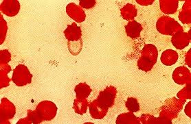
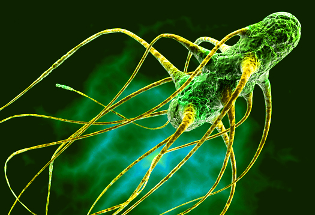
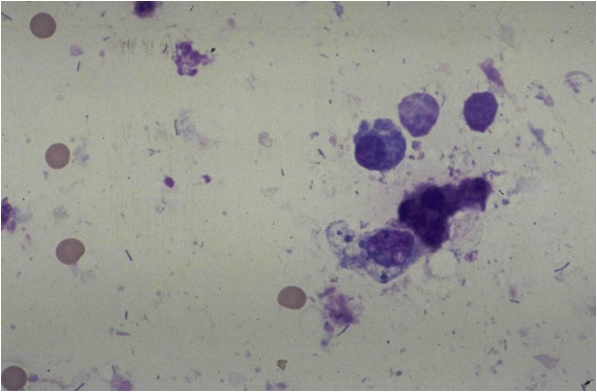
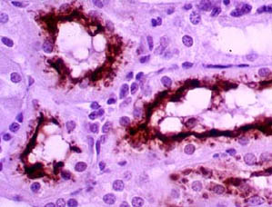
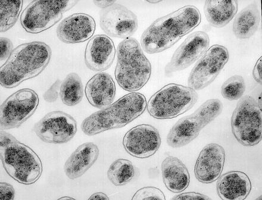

-

Brucella Suis
Porcine brucellosis, caused by the bacterium Brucella suis,
is an economically important cause
of reproductive loses in pigs. This organism can
be maintained in wild and feral swine, complicating -

Salmonella
Salmonella germs can live in the intestinal
tract of many different animals. Most people
have diarrhea, fever, and stomach pain that
start 1 to 3 days after they get infected. -

Pasteurella Multocida
This was discovered in birds infected with cholera
It is a non-motile coccobacillus and is penicillin-sensitive.
It can cause infections in humans. As a result of cat and dog
bites and scratches. -

Leptospira Canicola
Leptospires are transmitted to cattle via maintenance
hosts. Maintenance hosts are a constant source of infection
and typically do not show clinical signs. As silent-carrier
animals, they maintain the bacteria and transmit leptospires to other animals. -

Brucella Abortus
Brucella are very small, gram-negative coccobacilli
that cause a zoonosis called brucellosis. Common names
for this infection are Bang's disease in cattle,
malta fever, and undulant fever.
Back